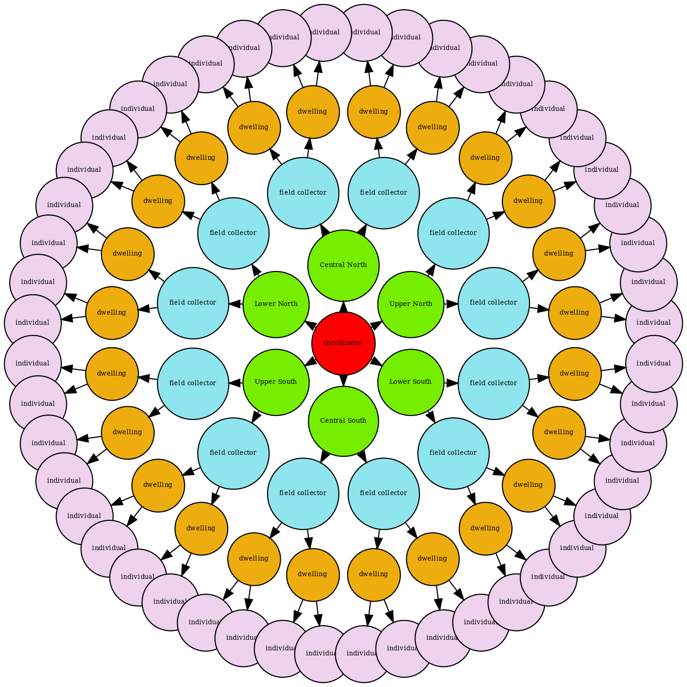

Overview
In this post we describe a relatively simple agent-based simulation. The simulation itself is a rough approximation of a household survey, consisting of a large collection of dwellings, in turn surveyed in a strictly face-to-face setting by one of a number of independent field collectors.
We describe the simulation in terms of the actor model, though we do so in a way that is largely agnostic with respect to programming language or actor framework. Still, a concrete implementation is useful for illustration, and one is provided here. This is implemented using Akka, an implementation of the actor model on the JVM, and so some jargon specific to Akka will appear here and there. Nevertheless, it should be easy enough to implement something similar in other frameworks
The Actor Model
From Wikipedia:
The actor model in computer science is a mathematical model of concurrent computation that treats actor as the universal primitive of concurrent computation. In response to a message it receives, an actor can: make local decisions, create more actors, send more messages, and determine how to respond to the next message received. Actors may modify their own private state, but can only affect each other indirectly through messaging (removing the need for lock-based synchronization).
Akka provides an implementation of the actor model on the JVM which adheres to this definition quite faithfully. We create a set of actors, collectively referred to as an actor system, and actors can only communicate with each other by sending messages. That is, no actor can change or access the internal state of another actor directly. If one actor wishes to know something about another actor, it can request information by sending a message, and the receiving actor can respond with a message in kind. Importantly, messages are just that, and they do not provide direct access to internal state of an actor directly. This means that actors can operate concurrently, but with complete safety–since actors have exclusive access to their state, we do not need to concern ourselves with thread safety or any of the common mitigation strategies, such as synchronized blocks, locks, semaphores, and so on.
As implemented by Akka, actors are free to communicate with any other actor in the system, and functionality does exist that facilitates the discovery of an actor by other actors. However, actors are commonly organised in a hierarchical fashion, typically only communicating with their direct subordinates. In fact, actors can spawn other actors, and this is typically what is meant by subordinate. That is, if actor A spawns actor B, then B is A’s subordinate. Again, this is not a requirement, but it is a useful pattern in practice nevertheless. Taking this hierarchical pattern to the fullest extent, it is common to have a single actor functioning as a broker, or coordinator, between the outside world and the actor system itself.
Simulation Overview
At a very high level, our actor system looks as follows:
The arrows in the diagram represent responsibility. For example, the inner-most (red) circle is the central coordinator, and is responsible for spawning the area coordinators (green circles), and for passing messages to them. The area coordinators are responsible for spawning field collectors (blue circles), assigning work to them, and forwarding messages to them. Field collectors receive work from area coordinators in the form of addresses, which collectors use in turn to spawn dwellings. Finally, dwellings will each spawn a random set of individuals which will serve as its residents. Field collectors send interview requests to dwellings, and dwellings reply with ‘refusal’, ‘empty’, ‘non-contact’, or ‘response’. If a dwelling is non-empty, and decides to ‘respond’, it sends the parent field collector references to the individuals which the collector then also attempts to contact. We describe the system in more detail in the following sections.
One actor is not shown in the diagram, and that is a single instance of
EventRecorder. It is the job of this actor to persist (in a SQLite database)
event information we wish to keep after our simulation is finished, and a number
of the actors in the system will send information directly to it. It’s a bit
clunky (a real-time system might use something like Kafka topics instead, or
even Akka’s own streaming functionality, for example), but functional enough for
this simple example.
Actors
We will first describe the various actors at a high level, and then move on to a description of the message protocol and the various sub-processes.
Coordinator
There is a single coordinator, an instance of Coordinator, which is our
entry-point for the actor system itself. On start-up, the coordinator spawns 6
area coordinators, and its sole responsibility after set-up is to listen for
messages from outside the system, and pass them to the appropriate area
coordinator. The internal state of the coordinator is just a list of the area
coordinators spawned.
AreaCoordinator
The simulation as configured contains 6 area coordinators, which are instances
of AreaCoordinator, and which divide New Zealand up as follows:

Area coordinators are responsible for spawning field collectors and for deciding which field collectors will spawn particular dwellings. The internal state of an area coordinator is a list of the the collectors spawned, and a map storing the assignment of dwellings to collectors.
FieldCollectorActor
Field collectors are instances of FieldCollectorActor, and are spawned by area
coordinators. They are assigned a certain number of dwellings, after which it is
their responsibility to set about getting responses from those cases. They will
typically be sent a message instructing them to simulate a day’s work, assuming
a particular starting day and time. This will involve placing all unfinished
cases in some efficient driving order, and then visiting each in turn. A field
collector will send a dwelling an interview request, and react accordingly. In
all cases, time will be advanced by a random amount appropriate for the type of
response, and interviewers will stop working once some maximum amount of work
has been exceeded.
The internal state of a field collector contains information about itself (id, address, location, name) as well as a configuration object that contains:
- cases it has been assigned
- overall summaries of each case (complete, incomplete, etc.)
- work items for the current day
- the dwelling being surveyed
- the current individual being surveyed
- the simulated date and time of day
- the total kilometres travelled in the current day
- the total minutes spent working in the current day
DwellingActor
Dwellings are instances of DwellingActor, and are spawned by the field
collector responsible. Once they are spawned, they will in turn spawn a random
set of individuals to function as the dwelling’s residents. A dwelling can
respond to interview requests from the field collector which spawned them,
avoiding contact, refusing, or providing a full response. After a full response,
the dwelling actor will pass the references for any individuals it spawned to
the field collector.
The internal state of a dwelling actor contains information about itself (id, address, location), along with a list of all individuals spawned. A dwelling is also aware of whether or not it has responded (that is, sent a complete questionnaire response to its parent collector).
IndividualActor
Individuals function as dwelling residents, and are instances of
IndividualActor. All they can do is respond to requests for an interview from
field collectors, avoiding contact, refusing, or providing a full response.
Individuals are only discovered by field collectors after getting a response
from the dwelling that spawned them.
The internal state of an individual contains information about itself (name, age, sex, date of birth), and a reference to its parent dwelling. Like dwellings, individuals are also aware of whether or not they have responded (i.e., provided a questionnaire response to a field collector).
EventRecorder
The system has a single instance of EventRecorder, and this actor is
responsible for persisting information. This might not reflect idiomatic, or
best practice; but it works well enough in this case. For example, when a field
collector gets a response from an individual, the individual will send a message
to the field collector indicating the type of response, but also a JSON string
representing a questionnaire response if fully responding. The response itself
is then sent, along with identifiers for the dwelling and individual, to the
event recorder to persist. Currently, the event recorder stores the following:
| table | from | purpose |
|---|---|---|
collectors |
AreaCoordinator |
A list of all spawned collectors. |
dwellings |
FieldCollectorActor |
A list of all spawned dwellings. |
dwelling_assignment |
FieldCollector |
Collector and dwelling pairs reflecting work allocation. |
dwelling_response |
FieldCollector |
Completed dwelling questionnaires. |
individual_response |
FieldCollector |
Completed individual questionnaires. |
interview |
FieldCollector |
All attempted contacts and their outcome. |
trips |
FieldCollector |
All car trips made by field collectors. |
Detailed Process / Message Protocol
Here we provide additional detail about the overall simulation. The simulation itself is driven largely by the messages that can be understood by the various actors, so the simulation is well described by the message protocol. However, rather than describe the simulation in terms of all possible messages, we instead describe the following broad sub-processes:
- spawn area coordinators
- spawn field collectors
- spawn dwellings and individuals
- repeatedly simulate a day of work
Spawn Event Recorder and Area Coordinators
The actor system starts with a single coordinator, which is created as follows:
val system = ActorSystem(Coordinator(conf.dbpath()), "collectionsim")
This coordinator spawns a single event recorder and 6 area coordinators when created. The code looks as follows:
val eventRecorder: ActorRef[EventRecorderCommand] =
context.spawn(EventRecorder(dbpath, 100), "eventrecorder")
val areaCoordinators: Map[Area, ActorRef[AreaCoordinatorCommand]] =
area.areas.map(x =>
(x, context.spawn(AreaCoordinator(eventRecorder), s"areacoordinator@${x.toString}"))
).toMap
Note that dbpath is the name of the SQLite database which will be created, and
100 is the batch size for writing to the database. That is, a buffer is
maintained that contains up to 100 SQL queries–when the buffer is full, the
queries are committed to the database.
Spawn Field Collectors
Field collector actors are ultimately spawned by passing a message to the coordinator, which is defined as follows:
case class FieldCollector(
id: Int, address: String, location: Coordinates, area: String
) extends CoordinatorCommand with AreaCoordinatorCommand
This message is passed to the coordinator, the coordinator then forwards it to the correct area coordinator, and the area coordinator then spawns a new collector. The area coordinator also sends a message to the event recorder to be persisted. Visually:

(Note I got a Wacom tablet recently, which is awesome, but I’m new to any sort of digital drawing process, and the hand-eye coordination is taking some time. So, this is the best I can do for now! Sorry.)
Collectors can be provided by a CSV (or gzipped CSV) file, and an iterator can
be used to read such files row-by-row, converting each row to an instance of
FieldCollector, before being passed to the coordinator. For example, the
simulation source includes a file,
interviewers.csv.gz,
consisting of 100 locations, and the first few rows look as follows:
| address_id | full_address | region | lng | lat |
|---|---|---|---|---|
| 236594 | 258 Hereford Street, Christchurch Central, Christchurch | 13 | 172.6452 | -43.53221 |
| 1535707 | 26 Harris Road, Pokuru | 3 | 175.2201 | -38.02346 |
| 617660 | 125 Westminster Avenue, Tamatea, Napier | 6 | 176.8741 | -39.50367 |
| 582666 | 49 Cambridge Terrace, Kaiti, Gisborne | 5 | 178.0384 | -38.67728 |
| 2096666 | 206/155 Beach Road, Auckland Central, Auckland | 2 | 174.7741 | -36.84973 |
| 992032 | 14 Glen Close, Glen Eden, Auckland | 2 | 174.6365 | -36.91012 |
We can spawn a new collector for each row by running something like:
implicit val csvConfig = CsvConfig("address_id", "full_address", "lng", "lat", "region")
val cit = FieldCollectorIterator("interviewers.csv.gz")
while (cit.hasNext) {
system ! cit.next()
}
For interest, the interviewer locations look as follows:
Spawn Dwellings
The process of spawning a dwelling actors is triggered by sending a message to the coordinator, defined as follows:
case class Dwelling(
id: Int, address: String, location: Coordinates, area: String
) extends CoordinatorCommand with AreaCoordinatorCommand with FieldCollectorCommand
This message is passed to the coordinator, the coordinator then forwards it to the correct area coordinator, and the area coordinator then decides which of its collectors to forward the message to. Additionally, when a dwelling is spawned, the field collector sends a message to the event recorder to be persisted. Visually:
The rule for deciding which specific field collector will be sent a particular dwelling is currently very simple, and works as follows:
- filter the list of collectors to the set with less than
$n$cases already assigned - assign the dwelling to the closest (according to a routing service) remaining collector.
Like collectors, dwellings can be provided by a CSV (or gzipped CSV) file, and
an iterator can be used to read such files row-by-row, converting each row to an
instance of Dwelling, and passing it to the coordinator. For example, say we
had a file called dwellings.csv.gz, and the first few rows looked as follows:
| address_id | full_address | region | lng | lat |
|---|---|---|---|---|
| 2186256 | 75B Insoll Avenue, Enderley, Hamilton | 03 | 175.2944 | -37.76214 |
| 814042 | 7 Bertram Street, Hillcrest, Rotorua | 04 | 176.2322 | -38.14669 |
| 695912 | 114 Naylor Street, Hamilton East, Hamilton | 03 | 175.3075 | -37.79751 |
| 1283168 | 46 Mako Street, Oneroa, Waiheke Island | 02 | 175.0076 | -36.78458 |
| 336865 | 85 Wither Road, Witherlea, Blenheim | 18 | 173.9541 | -41.53808 |
| 336339 | 1/11 Milford Street, Witherlea, Blenheim | 18 | 173.9540 | -41.53505 |
Then we could spawn a new collector for each row by running something like:
implicit val csvConfig = CsvConfig("address_id", "full_address", "lng", "lat", "region")
val dit = DwellingIterator("dwellings.csv.gz")
while (dit.hasNext) {
system ! dit.next()
}
A number of sample files are provided along with the simulation source. For example sample1_01.csv.gz and sample1_02.csv.gz both consist of roughly 1600 locations each, but one is the result of a two-stage selection and one is a simple random sample, the result being the latter is more spatially dispersed. Spatially, the two samples look as follows:

Note that these two samples give us the opportunity to look a little at the plausibility of our simulation outcomes. All else constant, we’d expect collectors to have to travel more to service the non-clustered sample, and probably require more days to finish their workload overall as a result.
Spawn Individuals
Immediately after being spawned, a dwelling actor will then spawn a random collection of individual actors, or else remain empty / vacant. The process proceeds as follows…
Firstly, with some probability (default of 0.1), we decide the dwelling is empty, and do nothing.
For non-empty dwellings, the first step is to assign a household type. This is done randomly from the following discrete distribution (the default probabilities are drawn for the 2018 Census):
| household type | probability |
|---|---|
| one-person household | 0.2274 |
| one-family household | 0.6862 |
| two-family household | 0.0352 |
| other multi-person household | 0.0512 |
In the case of a one-person household, a single individual is randomly generated. This process involves generating a random name, sex, and a random birth-date which makes the person at least 18 years of age (using the current system time&endash;this could, of course, be modified). In the case of a multi-person household, we simply generate a random number of individuals in the same way.
In the case of a one-family household, we randomly generate a ‘family’, and for a two-family household, we randomly generate two. To generate a family, we first generate a random family type according to the following distribution:
| family type | probability |
|---|---|
| couple only | 0.3725 |
| couple only and others | 0.0376 |
| couple with children | 0.3985 |
| couple with children and others | 0.0373 |
| one parent with children | 0.1247 |
| one parent with children and others | 0.0293 |
Children are simply random individuals with a random birth-date which makes them
less than 15-years of age, and who have a specified family name. The process for
generating couples is very naive, being more illustrative than definitive–we
simply generate a male and female with a common surname, and who are within
$\pm$ 5 years of age of each other.
Simulating a Day’s Work
We kick off a simulated day of work by passing the coordinator a message defined as follows:
case class RunDay(datetime: LocalDateTime)
extends CoordinatorCommand with AreaCoordinatorCommand with FieldCollectorCommand
This message is then forwarded to each area coordinator, and each area coordinator then forwards it to each of their collectors. For example:
system ! RunDay(LocalDateTime.of(2022,01,10,9,0))

Each field collector will then proceed to work through their assigned dwelling cases, assuming a start time of 9:00 am on January 10, 2022. For each field collector, this means…
A field collector first subsets cases to those that are active. The active cases are placed in driving order by appealing to a routing service, and attempted one-by-one. This means travelling to the address of each case, attempting to interview the dwelling and any residents, and then moving to the next. The total minutes spent interviewing and total distance travelled are tracked, and if the maximum allowable minutes an interviewer can work in any day has been exceeded, the interviewer will return home, rather than travel to the next case. Each time a field collector travels to a new address, a record representing the trip, including origin and destination coordinates, departure and arrival time, and distance travelled is sent to the event recorder to persist. Likewise, all attempts to interview a dwelling or individual–the time the attempt is made, along with the outcome–is logged with the event recorder.
If a dwelling response has not been previously obtained, then the field
collector sends an AttemptInterview message to the dwelling, and the dwelling
responds with DwellingRefusal, DwellingNoncontact, or DwellingResponse. If
DwellingRefusal, the case is marked as complete, and no further attempts will
be made. If DwellingNoncontact, the collector moves on to the next case. If
DwellingResponse, the dwelling will also send a list of any individuals it has
spawned, and the collector will then attempt those in turn. Along with the list
of individuals, a dwelling will also send a payload representing a completed
household questionnaire (just a random string for now), which the collector will
then forward to the event recorder to persist. If a dwelling response has been
previously obtained, then the collector will already have a list of available
individuals, and so they will be attempted directly, and no message will be sent
to the dwelling.

Like dwellings, individuals will each be sent an AttemptInterview message, and
they will respond with any of IndividualRefusal, IndividualNoncontact, or
IndividualResponse. If IndividualRefusal, the individual will be marked as
complete, and no further attempts will be made. If IndividualNoncontact, the
collector will move on to the next individual, but the non-contact will remain
active, and so future interview attempts will be made. If IndividualResponse,
a payload representing a completed personal questionnaire will be sent as part
of the message, which the collector will then forward to the event recorder to
persist. The individual will be marked as complete, and no future interviews
will be attempted.

When finished with a particular dwelling, field collectors send themselves a
NextItem message. When received, collectors will remove the current case from
the pool of outstanding work, and send an AttemptInterview message to the next
available case (to the dwelling if no response has yet been received, or to the
next unfinished individual). When moving to the next case, collectors increment
a dayKms variable (if travelling), and a dayMins variable as appropriate.
At any point, ff there is no more work, or if dayMins exceeds some
pre-configured amount of time in the day, the collector sends themselves the
GoHome message. When this message is received, the route home is calculated
and dayKms and dayMins are incremented, the pool of work is emptied, and no
further messages are sent.
Analysing the Simulated Data
When a simulation is run, a SQLite database is used by the system’s event recorder. This database remains once the simulation has completed, and can be used to analyse the simulation after the fact. For example, above we noted that the samples sample1_02.csv.gz is more spatially dispersed than sample1_01.csv.gz, and so we would expect this sample to require more time and travel, all else constant. We can check this (in R, for convenience) quite directly:
library(RSQLite)
db1 <- dbConnect(RSQLite::SQLite(), "collectionsim1.db")
db2 <- dbConnect(RSQLite::SQLite(), "collectionsim2.db")
kms1 <- DBI::dbGetQuery(db1, "select sum(distance) / 1000 from trips")
kms2 <- DBI::dbGetQuery(db2, "select sum(distance) / 1000 from trips")
as.numeric(kms2 / kms1)
DBI::dbDisconnect(db1)
DBI::dbDisconnect(db2)
[1] 1.481211
That is, for one particular instance, the total distance travelled by all collectors was roughly 1.5 times greater for sample1_02.csv.gz than sample1_01.csv.gz.
In addition to this, we can create interactive tools using the simulated data. For example, the following is a screen grab of a simple Shiny application which can be used to look at daily work for each collector by day:

The following screen-grab is the same application, but configured to use a routing service to get the paths for trips, rather than drawing simple straight lines: